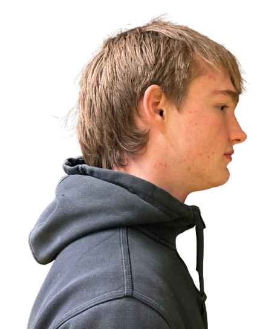

Niek
In een tijd waarin het steeds moeilijker lijkt om elkaar te begrijpen en vooroordelen de boventoon voeren, geloven wij in de kracht van echte gesprekken. Bridge The Gap is niet zomaar een podcast, het is een ruimte voor dialoog, waar we bewust voorbij de gebaande paden denken en ruimte maken voor verschillende perspectieven. Onze missie is om mensen dichter bij elkaar te brengen, door de menselijke verhalen achter meningsverschillen te belichten en de gemeenschappelijke grond te ontdekken. We geloven dat het vergroten van begrip en empathie de sleutel is tot het overbruggen van verdeeldheid en het versterken van onze samenleving.